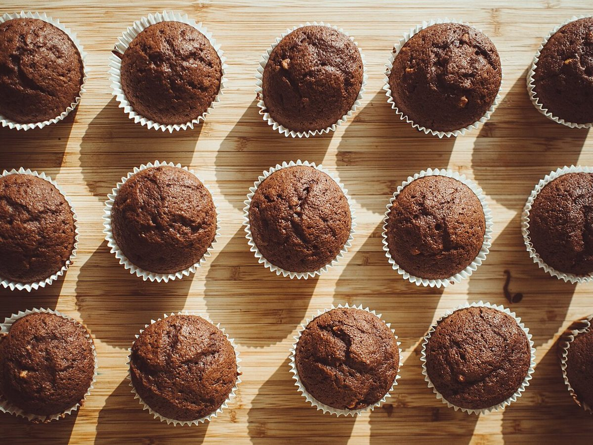

cafe / 広島県三原市
COLORScoffee house
広島県三原市宮浦にあるカフェ「COLORS coffee house」のご案内ページです。営業時間やメニューなど、詳しいことは準備中。まずはInstagramをのぞいてみてください。
制作側の連想
「回すと白くなる円盤」
これは制作側の連想で、お店の理念・由来とは無関係です。店名の「COLORS」から、色を塗り分けた円盤を勢いよく回すと、色が混ざって白っぽく見える、あの実験を思い出しました。そこでこのページは、七色の円盤を飾りに使い、写真を色ごとの棚に分けて並べています。お店の考えを示すものではありません。
色別の棚(イメージ)
赤・茶・銀・白。色で分けた写真たち
写真はお店のものではありません。国外または撮影地不明のフリー素材を、色の近さで並べています。
赤

茶



ご案内
お店のこと(確認できたものだけ)
| 所在地 | 〒723-0051 広島県三原市宮浦６丁目１１−５ |
|---|---|
| 電話 | 0848-29-2007 |
| 営業時間 | 準備中 |
| 定休日 | 準備中 |
| ご予約 | 準備中 |
| 駐車場 | 準備中 |
| SNS | Instagram @colors_coffee_house |